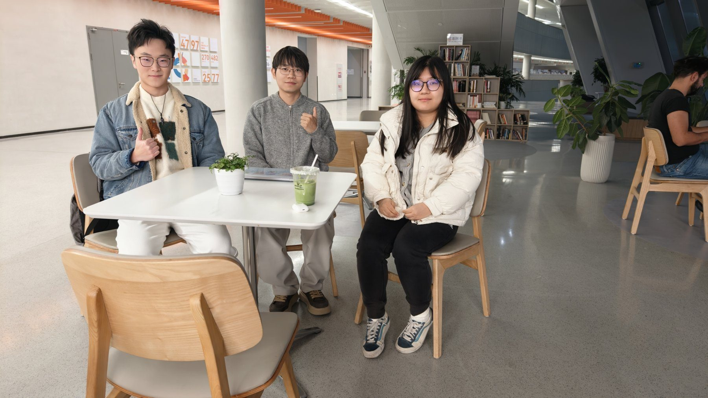

这一次，我们聊了什么
大模型服务由少数科技公司提供，不同模型面对相似问题时又常给出趋同答案。我们以这些现象为起点，讨论 AI 是否具有内在的中心化特性，以及这种特性对社会和个体的影响。
话题展开
- 当算力、数据与模型向少数主体集中，AI 是否正在成为中心化的认知中介？
- 这会削弱人类思想原本具有的去中心化、多源生成特征吗？
- 从技术架构、权力分配与认知模式来看，这一趋势会如何重塑社会结构、思想与行为？

大模型服务由少数科技公司提供，不同模型面对相似问题时又常给出趋同答案。我们以这些现象为起点，讨论 AI 是否具有内在的中心化特性，以及这种特性对社会和个体的影响。
